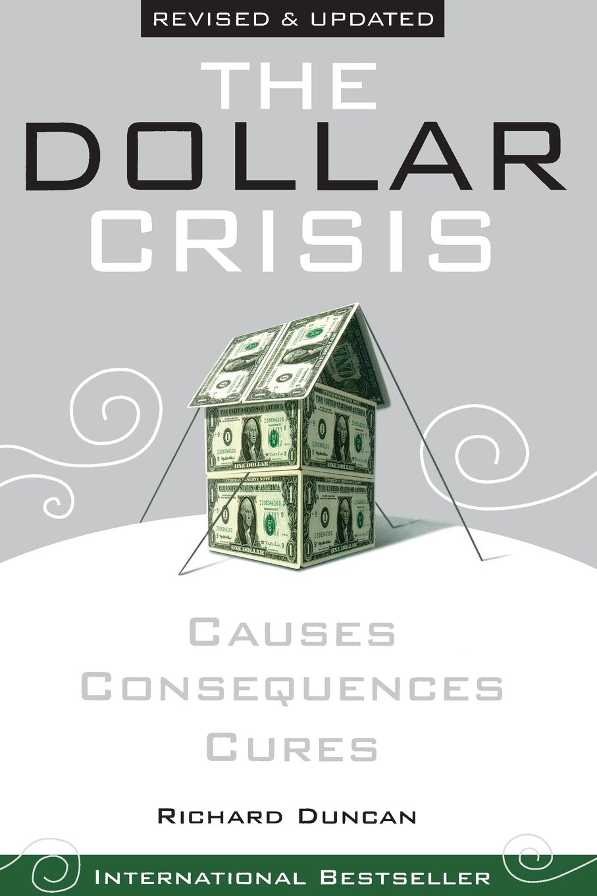

Following the end of world war two, with US being the world's largest creditor, countries started largely denominating their debts in USD. US in turn pegged USD to a fixed exchange rate with Gold. This agreement was formally known as the Brettonwood Systems.
US experienced difficulty backing this exchange rate during the oil crisis of the 1970s when OPEC started artificially reducing it's supply of oil thereby driving it's price in USD. This had a strong downwards pressure on value of the USD which the US propped up through use of their foreign reserves.
Seeing this weakness in US foreign reserve, thereby an discrepancy of the USD against gold, other trading partners started exchanging US dollar for gold. This added further pressure.
To provide relief on their foreign reserves US finally decoupled the fixed exchange rate between USD and gold. This resulted in the collapse of the Brettonwood Systems, leaving USD as the official reserve currency in the world without any underlying backing.
What followed were decades of global growth largely funded by the US government through control of the world's reserve currency.
Developing countries would sell goods to the US in exchange for USD. Instead of buying US goods in exchange for the USD earned, they would buy US Treasury bills, notes and bonds. This had the effect of maintaining favorable exchange rates for these countries while keeping their products competitive in the US market.
This widespread practice had the long term effect of driving balance of trade deficits in US with it's trading partners. While negligible in times of strong US domestic GDP growth, this system has of late started exhibiting difficulty sustaining. This is largely due to slow down in US domestic growth and its inability to scale to support trading partners that 4 times times the population size of the US.
It is advised countries which had long relied on this approach to domestic growth transit their economies to become net importers as soon as their economy gains the necessary growth momentum to do so.
Related readings
- *Fault lines*, Raghuram Rajan